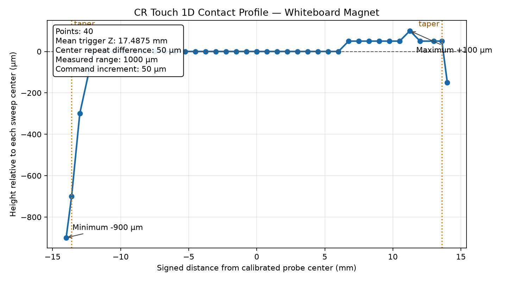
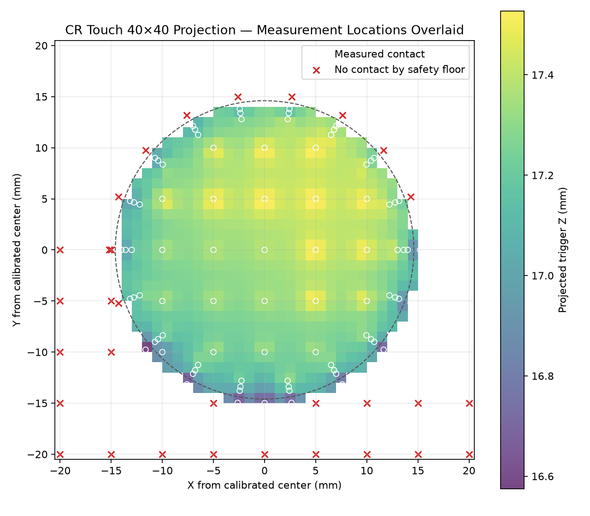
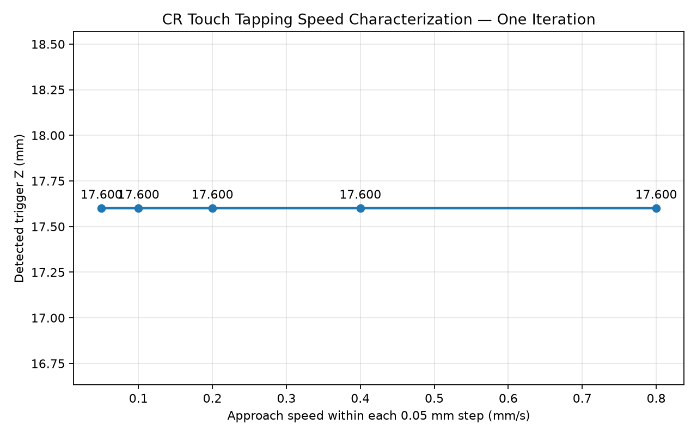
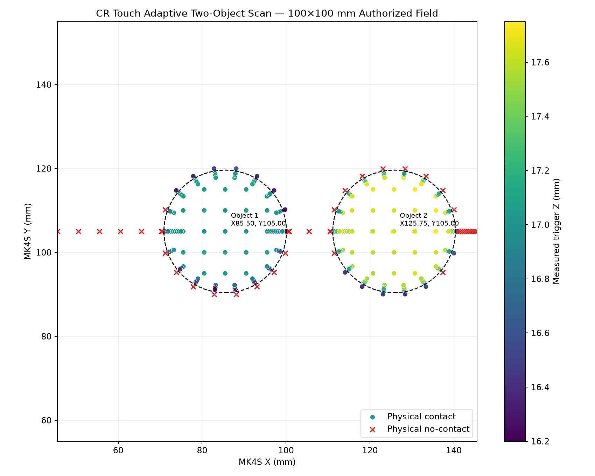

Keep xBuddy responsible for X, Y and Z. Verify the normal USB connection and read-only machine status first.
Stage 2 commissioned: the nozzle, heater, thermistor and toolhead fans are removed and CR Touch is centered. The verified field is X15.50–250.00, Y12.50–210.00 with safe XY at Z45 and mean bare-stage trigger Z28.11. Real motion still requires every live safety gate. The maintained files in docs/ are the authoritative engineering record.
Safe construction order
Build one verified boundary at a time.
Add fused 5 V probe power, a buffered control output, a conditioned 3.3 V trigger input and accessible test points.
Flash the locked commissioning firmware and verify the exact USB identity before connecting the probe.
Validated on D3/D8 as coarse approach and safety only. Fine profiling requires a separate continuous sensor and fine-Z actuator.
Current design allocation
Mega 2560 five-wire adapter
| Wire | Function | Mega destination | Protection |
|---|---|---|---|
| Black | +5 V probe power | D2 socket VCC | Dedicated fused branch |
| Red | Sensor ground | D2 socket GND | Common with White |
| Blue | Probe trigger | D2 socket White / Mega D3 | Persistent interrupt capture |
| White | Control ground | D8 socket GND | Common with Red |
| Yellow | Deploy/stow control | D8 socket Yellow / Mega D8 | High-impedance after command |
Validated mounted allocation: D3 trigger, D8 control, LCD on I²C 0x3E and Chainable RGB LED on D6/D7. Never connect Mega GPIO to xBuddy motion nets.
LoveBoard decision: keep it as the labelled toolhead breakout. Its motor, heater, thermistor, fan, loadcell and filament-sensor connectors are dedicated xBuddy interfaces, not interchangeable GPIO, and cannot replace the Mega CR Touch controller.
Validated physical development
From first contact to adaptive tapping maps.
| Milestone | Verified result | Engineering meaning |
|---|---|---|
| Bench repeatability | 5/5 trigger cycles passed | D3/D8 wiring, reset and control sequence validated |
| Mounted approach | Physical contact, D3 trigger, retract and cool final state | Coarse tapping workflow accepted |
| 1D profile | 40 center-referenced readings | Flat top and tapered rim resolved; center refined to X125.5/Y105 |
| Adaptive 2D map | 116 physical readings, 85 contacts, 31 no-contact controls | 40×40 projection with 13.8× fewer cycles than a literal raster |
| Speed sweep | Z17.600 at 0.05–0.80 mm/s | 0.80 mm/s is a known-surface candidate; unknown surfaces start slow |
| Two-object discovery | 234 physical readings across an authorized 100×100 mm field | Two centers found without the nominal second center; clear gap bracketed at 10.0–11.0 mm |




Open the full development record · Open Stage 2 conversion status · Open LoveBoard assessment
Development and purchasing
Coarse motion now; direct metrology next.
Closed-loop XYZ NanoCube, 100 µm travel per axis, direct capacitive sensing and parallel kinematics. Preferred fine stage for integration with the Prusa coarse platform.
High-speed 5 × 5 × 5 µm PicoCube for later small-field AFM/SPM work after coarse approach and force sensing are mature.
Global-shutter USB3 camera, telecentric lens and controlled illumination for XY registration, feature priors and collision context—not Z metrology.
AFM cantilever, piezoresistive cantilever, tuning fork or equivalent force-gradient sensor. The existing 5 kg load cells are not the final fine probe.
Next bench session
Continue safely.
- Completed: centered CR Touch conversion and five-cycle Probe Out/In test.
- Completed: precise X/Y homing and optimized 234.50 × 197.50 mm field.
- Completed: five-point bare-stage map, mean Z28.11 and 0.60 mm peak-to-peak variation.
- Use Z45 for XY travel and apply the stage background map before interpreting sample corrugation.
- Real Measurement remains conditional on D3 LOW, D8 high impedance and zero heater targets/outputs.
Open the visual wiring guide · Integration source · Commissioning roadmap